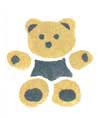
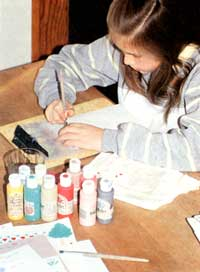

Have you ever wanted something so badly but not had the money to buy it? Well, that was the situation I found myself in about five months ago. Not having a bike was getting to be simply horrible!
I decided to do something about it. I knew earning money was not going to be easy. I began to look through hobby books for ideas, but nothing suited me. Then a family friend suggested stenciling stationery.
You may want to try it, too. If so, here're the supplies you'll need:
Paper. The best size for stationery is 5 1/2 by 8 1/2 inches. I bought 1,000 sheets for $8 at a local print shop. If that price is too much for you, ask the printer for any available scraps (I lucked into some lavender paper with matching envelopes!). If the scraps are too large, ask the printer to cut them to the right size.
Envelopes: You can buy a box of 100 envelopes (3 5/8 by 6 1/2 inches) for approximately $1 at any discount store. WARNING: You should buy the envelopes before the paper. This is why: Most printers have different colors of stationery, but a discount store will probably have only one. So buy your envelopes, then take them to the printer and pick paper to match.
Paints, brushes, and stencils: These can all be bought at art or craft stores or through craft catalogs. You will need acrylic base-coat paints. A two-ounce bottle costs from $2 to $3.
Stenciling brushes come in a variety of sizes. I purchased sizes 2 and 6 and found them useful with all sizes and shapes of stencils. Prices range from 98 cents to $2.
Flexible stencils cost from 98 cents to $5 each. Pay very close attention to the sizes of stencils as well as to their designs-I nearly bought a stencil bigger than my paper!
Now here's how to do the stenciling. Find a quiet spot in your house where you can get plenty of light. I happen to listen to the radio while I work. I don't know what you like. If you'd rather, play tapes, or just put all your mind to it.
You will need a glass of water, a clipboard, paper, stencils, paints, brushes, and a towel or sponge. Put the paper in the clipboard with the stencil on top. Stick the brush in the paint, then wipe most of the paint off. Now gently hold the stencil down, and paint the colors into their places. Try not to move the stencil. Paint in small circles or in little areas at a time. Do NOT just brush freely as you would with a watercolor, or the paint will go under the stencil. (What a catastrophe!)
Once done with a sheet, set it aside and start a new one. Stencil the flaps of matching envelopes in the same way. When you're finished, wash the stencils and brushes and dry them thoroughly.
I have my stationery shrink-wrapped in sets of 12 sheets and envelopes for about 20C a pack at our local print shop. I'm now ready to sell them for $3 a pack.
I started selling by word of mouth-calling my mom's friends. I sold 10 packs that way. Then I called a craft store to see if it might sell them on consignment (that means I get paid only for the packages the store sells). After the owner saw my stationery, we set a price and I was off! I now have my stationery in four stores.
If you'd like to try that, look in the yellow pages of the phone book for local craft and gift stores. Some storekeepers may say, "No, thanks." Don't feel put down-keep trying! Once you find a store, leave your stationery in it for a month or so, then give it a call to see what's up. Some of your packages may have sold! You may also want to offer different designs for different times of year.
This has been a fun business for me, and I hope it is for you too. Oh, by the way, I did earn enough money to get what I wanted so badly: a new 10-speed bike!
MOTHER is glad to buy and publish well-written articles from young people concerning their original projects or small businesses. However, we recommend that you query (that is, send us a letter telling about thestory that you'd like to do) before writing a full article. Send your queries to Mother's Children, Mother Earth News, P.O. Box 70, Hendersonville, NC 28793.
|
 ILEANA BULOW To decorate her stationary, Leah needs only a glass of water, a clip-board, paper, stencil, paints, brushes, and a towel. |
 |
|